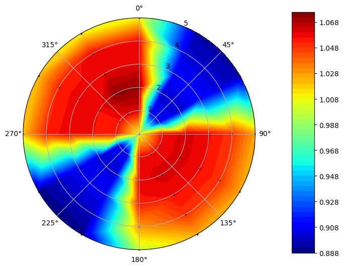

Tutorial for Analyzing Datasets using Distortion Metrics¶
In [1]:
import distorted as dt
import pandas as pd
This file will demonstrate how to compute various existing metrics for distortion from datasets using Distorted
In [2]:
df = pd.read_csv('data/SAEFigure21.csv')
sample = dt.Distortion(df)
To compute each distortion metric, simply run their associated function from the Distortion class
Refer to function documentation for each metric’s formulas and description of variables.
In [3]:
sample.plot_quantity('Total Pressure')

Examples¶
In [4]:
sample.pDeltaPavg1()
Out[4]:
0.18400613353778453
In [5]:
sample.pDeltaPavg2()
Out[5]:
0.11097036567885596
In [6]:
sample.PrattAndWhitneyKD2()
Out[6]:
723.8214687328376
In [7]:
sample.ARP1420() #ARP1420 Returns a table of distortion intensity and extent information
Out[7]:
| Span/ Ring # | Circumferential Intensity | Circumferential Extent (deg) | Multiple Per Rev | Radial Intensity | |
|---|---|---|---|---|---|
| 0 | 1 | 0.072311 | 70.630631 | 1.928822 | -0.007284 |
| 1 | 2 | 0.077349 | 69.189189 | 1.994193 | -0.009034 |
| 2 | 3 | 0.071547 | 70.630631 | 1.950068 | -0.008284 |
| 3 | 4 | 0.071375 | 72.792793 | 1.930127 | 0.000133 |
| 4 | 5 | 0.062398 | 73.513514 | 1.894335 | 0.024467 |
Some Distortion metrics require information on dynamic pressure for computation, and thus Static Pressure or Velocity data must be included in the dataset.
In [8]:
sample.RollsRoyceDC60()
Rolls Royce DC60 metric requires either Static Pressure or Velocity data
In [9]:
df2 = pd.read_csv('data/sample.csv') # Sample dataset with static pressure data
sample2 = dt.Distortion(df2)
In [10]:
sample2.RollsRoyceDC60()
Out[10]:
0.02152726931274783